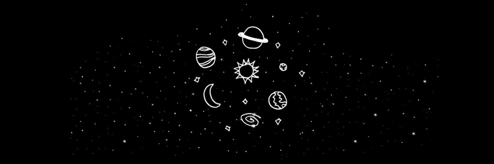

Exo-planets
Project 76

Introduction: What's Outside?
You're probably familiar with our solar system and the types of planets in it. Some are small and rocky and some are giant gas planets. The rocky, or terrestrial ones, are closer to our star, the sun, where it's much warmer, while the gas giant planets are out in the cold... but what about the other planet systems we're finding among the stars?
An exoplanet is any planet beyond our solar system. Most orbit other stars, but free-floating exoplanets, called rogue planets, orbit the galactic center and are untethered to any star.
Appearance
Exo-planets don't look a lot like our system's planets. In fact, there doesn't seem to be a typical arrangement for planetary systems at all. They're all certainly arranged differently.
Arrangement
The sizes of the planets vary a lot, too. Sure, there are lots of planets the size of Jupiter and Neptune and Earth, but their Jupiters and Neptunes can be way closer to their star than ours.
Terms
Scientists who study exo-planets use terms such as Hot Jupiters and Warm Neptunes. Plus, there's a whole range of planets that go from much smaller than Earth to way bigger than Jupiter.
To help understand which weight class these planets are in, we often refer back to the different planet types in our solar system, using terms like Mini-Neptune and Super-Earths or Super-Terrestrials.

We're constantly learning about exoplanets and our ideas about them are changing as we go, ideas about how these different planet types relate to each other and what their variety can teach us about our own weird little solar system.
Credits:
and